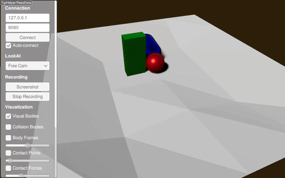

Height Map Using the Terrain Generator¶
XML Way¶
Try it yourself with
./xmlReader <PATH_TO_RAISIMLIB>/rsc/xmlScripts/heightMaps/heightMapUsingTerrainGenerator.xml
The xml file is constructed as following:
<?xml version="1.0" ?>
<raisim version="1.0">
<timeStep value="0.001"/>
<objects>
<sphere name="sphere" mass="1">
<dim radius="0.5" />
<inertia xx="0.1" xy="0" xz="0" yy="0.1" yz="0" zz="0.1" />
<state pos="0 0 5" quat="1 0 0 0" linVel="0 0 0" angVel="0 0 0" />
</sphere>
<capsule name="capsule" mass="1">
<dim radius="0.5" height="1" />
<inertia xx="0.1" xy="0" xz="0" yy="0.1" yz="0" zz="0.1" />
<state pos="1 0 5" quat="1 0 0 0" linVel="0 0 0" angVel="0 0 0" />
</capsule>
<box name="box" mass="1">
<dim x="0.5" y="1" z="2"/>
<inertia xx="0.1" xy="0" xz="0" yy="0.1" yz="0" zz="0.1" />
<state pos="1 1 5" quat="1 0 0 0" linVel="0 0 0" angVel="0 0 0" />
</box>
<heightmap name="terrain" xSample="50" ySample="50" xSize="20" ySize="20" centerX="0" centerY="0">
<terrainProperties frequency="0.2" zScale="3.0" fractalOctaves="3" fractalLacunarity="2.0" fractalGain="0.25" stepSize="0" seed="0"/>
</heightmap>
</objects>
</raisim>
The perlin parameters are not very trivial to understand. Play with them to get the shape you want.
C++ Way¶
raisim::TerrainProperties terrainProperties;
terrainProperties.frequency = 0.2;
terrainProperties.zScale = 3.0;
terrainProperties.xSize = 20.0;
terrainProperties.ySize = 20.0;
terrainProperties.xSamples = 50;
terrainProperties.ySamples = 50;
terrainProperties.fractalOctaves = 3;
terrainProperties.fractalLacunarity = 2.0;
terrainProperties.fractalGain = 0.25;
auto hm = world.addHeightMap(0.0, 0.0, terrainProperties);